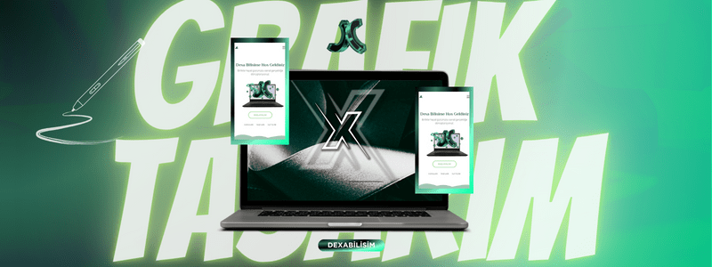

BU SAYFALARDA NELER VAR?
Sitemiz "Dexa Bilişim" olarak web sitesi, grafik tasarım, sosyal medya hizmetleri gibi bir çok hizmet veren bir firmadır.Bu yazı sayfalarında da sizlerin en çok merak ettiği ve arattığınız soruları derliyoruz.Siz de bu hizmetlerden faydalanmak için hemen bizi arayabilirsiniz.

Grafik Tasarımın Faydaları Nelerdir ?
Grafik tasarım, görsel iletişimdeki önemli bir araçtır ve birçok fayda sunar.İlk olarak, grafik tasarım, karmaşık fikirleri ve mesajları anlaşılır ve etkili bir şekilde iletmek için kullanılır.İyi tasarlanmış grafikler ve görseller, izleyicinin dikkatini çeker ve mesajların hızlıca iletilmesini sağlar. Ayrıca, marka kimliğini oluşturmak ve güçlendirmek için vazgeçilmezdir. Özgün bir logo, renk paleti ve tipografi, markanın tanınabilirliğini artırır ve tüketici sadakatini güçlendirir. Grafik tasarım aynı zamanda bilgi aktarımını kolaylaştırır, karmaşık verileri anlaşılır hale getirir ve infografikler veya çizelgeler aracılığıyla bilgiyi görsel olarak iletebilir. Sonuç olarak, grafik tasarım, iletişimde, marka yönetiminde ve bilgi paylaşımında önemli bir rol oynar ve birçok sektörde vazgeçilmez bir araç olarak kabul edilir. Aşağıda web sitesi yaptırmanın süresini değiştiren bazi süreçler bulunmaktadır. Aşağıda grafik tasarımın faydalarından bazileri örnek verilmiştir.
- Marka Tanıtımı
- Profesyonellik ve Güven
- Dikkat Çekme
- İş Fırsatları
Grafik Tasarımın Sosyal Medya Ve İş Seçeneklerine Faydası Var Mıdır ?
Evet, grafik tasarımın hem sosyal medya hem de iş seçeneklerine büyük faydaları vardır.Sosyal medyada, iyi tasarlanmış görseller, dikkat çekmeyi ve izleyicilerin ilgisini çekmeyi kolaylaştırır, böylece markanızın veya içeriğinizin daha geniş bir kitleye ulaşmasını sağlar. Görsel içerik, marka kimliğinizi güçlendirmenize ve izleyicilere kaliteli ve profesyonel bir izlenim bırakmanıza yardımcı olur. Ayrıca, grafik tasarım becerileri, birçok sektörde iş fırsatları sunar. Reklam ajansları, medya şirketleri, web tasarım firmaları ve daha birçok alanda grafik tasarımcılara olan talep, bu becerilerin iş dünyasındaki değerini artırır. Dolayısıyla, grafik tasarımın hem sosyal medya hem de iş dünyasında önemli bir katkısı vardır. Eminim ki sizler de profesyonel bir sayfanın yönetimi ile karmaşık hazırlanmış sayfa düzenleri ve tasarımları arasındaki farkı görebilirsiniz. İlk izlenim müşteri için her şeydir. Profesyonelliğine güvenmediği ve içeriği beğenmediği hiçbir ürünü almaz. Bu yüzden tasarımlarınızı hat safhada iyi tutun. Bizimle iletişime geçip fikir alışverişi yapabilirsiniz.